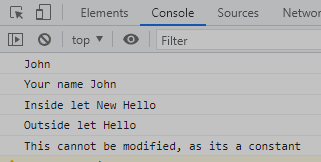

//If we declare variable directly inside script tag than it takes global scope
var name = "Peter";
var name = "John";//variable re-declaration with var keyword does not give error in JS
{
var name2 = "Jane"; // this will take local scope of the function
console.log(name);
}
console.log("Your name " + name);
// console.log(name2); // this will give error becz name2 has scope only within f1 funcation

let output = "Hello";
//let output = "Hello2";//will give error as let will not allow redeclaration of same variable
{
let output = "New Hello";//but let will allow redeclaration inside a function or any block
console.log("Inside let " + output);
}
console.log("Outside let " + output);
const finalVal = "This cannot be modified, as its a constant";
//finalVal = "I am changing value of constant hence it will give error";
console.log(finalVal);